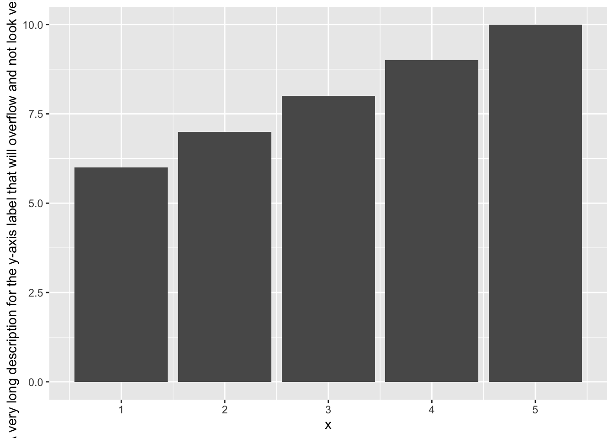
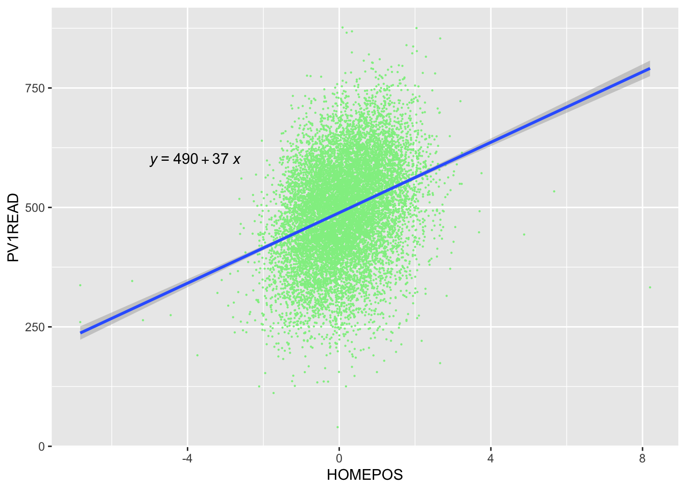
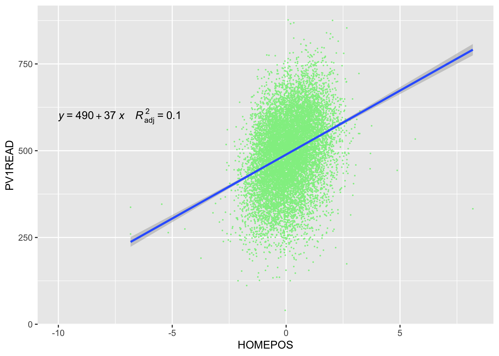
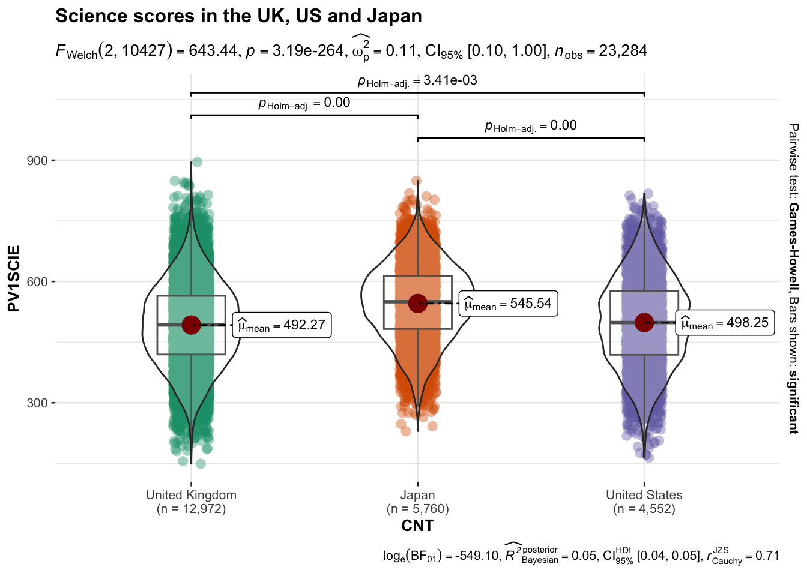
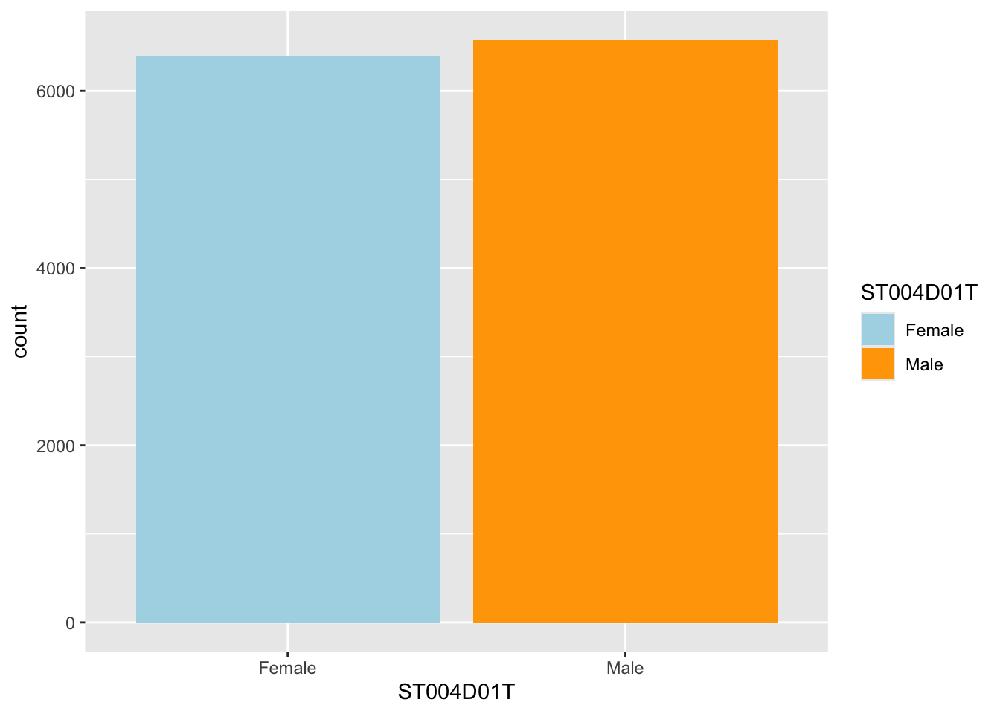
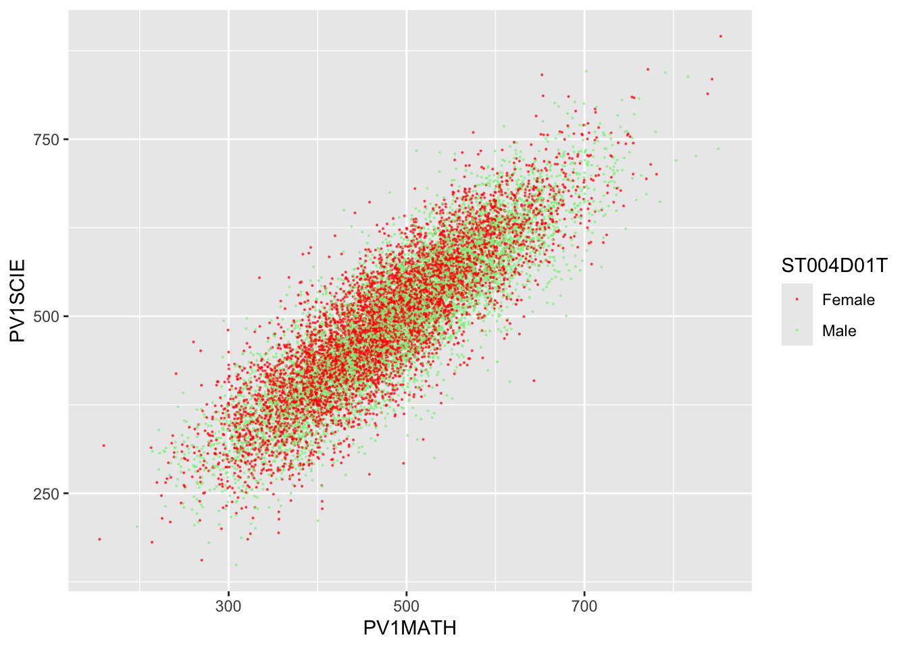

Questions and Answers
1 Questions about R
1.1 Why doesn’t my select/filter statement work?
When you are loading packages, sometimes different packages have the same function names in them, and the functions themselves will do very different things. For example, there is a select function in the tidyverse, but also another select function in the package MASS that does something very different. If we load the tidyverse before loading MASS, then the MASS version of select is the one that will be used?!
To get around this make sure that you load the tidyverse after MASS, to be safe you should always load the tidyverse last.
# A tibble: 53,940 × 3
carat cut color
<dbl> <ord> <ord>
1 0.23 Ideal E
2 0.21 Premium E
3 0.23 Good E
4 0.29 Premium I
5 0.31 Good J
6 0.24 Very Good J
7 0.24 Very Good I
8 0.26 Very Good H
9 0.22 Fair E
10 0.23 Very Good H
# ℹ 53,930 more rowsyou can also specify the package that select comes from (in this case from a package within the tidyverse called dplyr):
# A tibble: 53,940 × 3
carat cut color
<dbl> <ord> <ord>
1 0.23 Ideal E
2 0.21 Premium E
3 0.23 Good E
4 0.29 Premium I
5 0.31 Good J
6 0.24 Very Good J
7 0.24 Very Good I
8 0.26 Very Good H
9 0.22 Fair E
10 0.23 Very Good H
# ℹ 53,930 more rowsFinally, there is a package that helps your deal with conflicts called conflicted. At the top of your script you can define which version of a function you prefer, this will be the version that will always be used. If you want to specify another version of a function, you can still use other versions of the function using the :: notation:
To find out if you have any conflicts, you can run conflict_scout().
1.2 How can I unload packages
If you are finding yourself with a conflict as mentioned above and want to unload packages, then you need to run the following code:
# adapted from: @mmfrgmpds https://stackoverflow.com/questions/7505547/detach-all-packages-while-working-in-r
while(!is.null(sessionInfo()$loadedOnly)){
lapply(names(sessionInfo()$loadedOnly), require, character.only = TRUE)
invisible(lapply(paste0('package:', names(sessionInfo()$otherPkgs)), detach, character.only=TRUE, unload=TRUE, force=TRUE))
}1.3 Why am I getting the error ‘could not find function “%>%”’
The pipe operator %>% is loaded when you load the tidyverse package - make sure you have installed tidyverse and loaded it
1.4 I am getting the error: ‘“Error: Mapping should be created with aes() or aes_().”’ when using ggplot
This may be caused by having a bracket after the geom rather than before it
1.5 My axis labels are too long
If you want to use long axis titles you may find they overrun the space available
# Make a sample data frame
data<-data.frame(x=5:1,
y=10:6)
# plot the data
ggplot(data, aes(x=x, y=y)) +
geom_col()+
ylab("A very long description for the y-axis label that will overflow and not look very nice")
To insert a line break in the axis label, add \n to the text where you want line breaks.

1.6 How can I find out the full item labels in the PISA data frame?
The code below will give you a list of all the item labels
1.7 How do I turn a data frame into a form I can put into an assignment or paper?
You can use the gt package to convert data frames to aesthetically pleasing outputs.
# load the gt package - you will need to run install.packages("gt") the first time
# install.packages("gt")
library(gt)
# Make the data frame you want you want to output
science_mean_scores <- PISA_2022 %>%
group_by(CNT) %>%
summarise(mean_science_score = mean(PV1SCIE, na.rm = TRUE),
sd_science = sd(PV1SCIE, na.rm =TRUE))
# Use gt to produce an output - you can copy and paste the table from the
# viewer window to your report
gt(science_mean_scores)| Country code 3-character | mean_science_score | sd_science |
|---|---|---|
| Albania | 375.8650 | 81.17499 |
| United Arab Emirates | 435.9609 | 108.04562 |
| Argentina | 415.0584 | 86.30466 |
| Australia | 507.7795 | 106.78340 |
| Austria | 494.0894 | 99.10689 |
| Belgium | 495.0015 | 99.89222 |
| Bulgaria | 421.9872 | 94.68480 |
| Brazil | 406.3370 | 93.33488 |
| Brunei Darussalam | 444.8849 | 93.49958 |
| Canada | 499.4697 | 98.78625 |
| Switzerland | 501.4123 | 97.88277 |
| Chile | 463.1057 | 94.91051 |
| Colombia | 420.9458 | 88.24887 |
| Costa Rica | 411.2082 | 80.40614 |
| Czech Republic | 510.7872 | 102.76484 |
| Germany | 495.2547 | 105.42084 |
| Denmark | 480.3369 | 96.87209 |
| Dominican Republic | 361.6200 | 68.71457 |
| Spain | 492.9236 | 90.06178 |
| Estonia | 527.3109 | 87.67284 |
| Finland | 497.9649 | 111.47589 |
| France | 481.3834 | 105.72320 |
| United Kingdom | 492.2651 | 102.15378 |
| Georgia | 385.6145 | 81.63218 |
| Greece | 445.4408 | 88.95744 |
| Guatemala | 374.5886 | 65.37109 |
| Hong Kong (China) | 524.5497 | 91.06857 |
| Croatia | 483.1283 | 91.97320 |
| Hungary | 492.1069 | 94.69703 |
| Indonesia | 394.9906 | 69.89182 |
| Ireland | 504.3750 | 91.95203 |
| Iceland | 448.0546 | 94.76950 |
| Israel | 464.0777 | 108.57084 |
| Italy | 481.3281 | 91.97045 |
| Jamaica | 395.7114 | 91.97299 |
| Jordan | 374.6990 | 73.68470 |
| Japan | 545.5399 | 92.72193 |
| Kazakhstan | 440.9755 | 84.44319 |
| Cambodia | 340.4659 | 50.34331 |
| Korea | 530.6552 | 103.99342 |
| Kosovo | 353.5723 | 64.84509 |
| Lithuania | 480.0535 | 92.51359 |
| Latvia | 492.5822 | 84.61410 |
| Macao (China) | 543.1331 | 86.61414 |
| Morocco | 363.4098 | 66.20574 |
| Republic of Moldova | 416.8691 | 82.50639 |
| Mexico | 410.7969 | 74.97042 |
| North Macedonia | 382.3574 | 82.77203 |
| Malta | 469.8360 | 101.83745 |
| Montenegro | 404.9706 | 83.35015 |
| Mongolia | 411.4142 | 77.72520 |
| Malaysia | 417.1980 | 77.85995 |
| Netherlands | 486.8380 | 111.77833 |
| Norway | 478.9396 | 106.09425 |
| New Zealand | 504.8458 | 107.85424 |
| Panama | 385.0859 | 84.92427 |
| Peru | 410.8352 | 85.35240 |
| Philippines | 353.7724 | 76.99187 |
| Poland | 505.1500 | 94.16577 |
| Portugal | 488.2668 | 89.70144 |
| Paraguay | 371.6893 | 74.52611 |
| Palestinian Authority | 367.0259 | 70.91610 |
| Qatar | 428.8246 | 96.25937 |
| Baku (Azerbaijan) | 381.5571 | 78.67151 |
| Ukrainian regions (18 of 27) | 454.4918 | 88.72635 |
| Romania | 436.4904 | 96.24036 |
| Saudi Arabia | 390.1679 | 72.21294 |
| Singapore | 560.8252 | 99.60358 |
| El Salvador | 374.9843 | 73.44363 |
| Serbia | 446.7715 | 88.26844 |
| Slovak Republic | 467.2694 | 102.95534 |
| Slovenia | 487.1098 | 93.85904 |
| Sweden | 494.1717 | 107.51162 |
| Chinese Taipei | 526.8225 | 102.25648 |
| Thailand | 429.1863 | 93.12958 |
| Türkiye | 476.0276 | 89.06750 |
| Uruguay | 433.2891 | 92.41654 |
| United States | 498.2506 | 108.85390 |
| Uzbekistan | 355.3407 | 63.34434 |
| Viet Nam | 473.3375 | 78.42436 |
# You can see more options on formating the table here: https://gt.rstudio.com
# For example to add a heading
gt(science_mean_scores) %>% tab_header(
title = "Mean science scores",
subtitle = "PISA 2022 data")| Mean science scores | ||
|---|---|---|
| PISA 2022 data | ||
| Country code 3-character | mean_science_score | sd_science |
| Albania | 375.8650 | 81.17499 |
| United Arab Emirates | 435.9609 | 108.04562 |
| Argentina | 415.0584 | 86.30466 |
| Australia | 507.7795 | 106.78340 |
| Austria | 494.0894 | 99.10689 |
| Belgium | 495.0015 | 99.89222 |
| Bulgaria | 421.9872 | 94.68480 |
| Brazil | 406.3370 | 93.33488 |
| Brunei Darussalam | 444.8849 | 93.49958 |
| Canada | 499.4697 | 98.78625 |
| Switzerland | 501.4123 | 97.88277 |
| Chile | 463.1057 | 94.91051 |
| Colombia | 420.9458 | 88.24887 |
| Costa Rica | 411.2082 | 80.40614 |
| Czech Republic | 510.7872 | 102.76484 |
| Germany | 495.2547 | 105.42084 |
| Denmark | 480.3369 | 96.87209 |
| Dominican Republic | 361.6200 | 68.71457 |
| Spain | 492.9236 | 90.06178 |
| Estonia | 527.3109 | 87.67284 |
| Finland | 497.9649 | 111.47589 |
| France | 481.3834 | 105.72320 |
| United Kingdom | 492.2651 | 102.15378 |
| Georgia | 385.6145 | 81.63218 |
| Greece | 445.4408 | 88.95744 |
| Guatemala | 374.5886 | 65.37109 |
| Hong Kong (China) | 524.5497 | 91.06857 |
| Croatia | 483.1283 | 91.97320 |
| Hungary | 492.1069 | 94.69703 |
| Indonesia | 394.9906 | 69.89182 |
| Ireland | 504.3750 | 91.95203 |
| Iceland | 448.0546 | 94.76950 |
| Israel | 464.0777 | 108.57084 |
| Italy | 481.3281 | 91.97045 |
| Jamaica | 395.7114 | 91.97299 |
| Jordan | 374.6990 | 73.68470 |
| Japan | 545.5399 | 92.72193 |
| Kazakhstan | 440.9755 | 84.44319 |
| Cambodia | 340.4659 | 50.34331 |
| Korea | 530.6552 | 103.99342 |
| Kosovo | 353.5723 | 64.84509 |
| Lithuania | 480.0535 | 92.51359 |
| Latvia | 492.5822 | 84.61410 |
| Macao (China) | 543.1331 | 86.61414 |
| Morocco | 363.4098 | 66.20574 |
| Republic of Moldova | 416.8691 | 82.50639 |
| Mexico | 410.7969 | 74.97042 |
| North Macedonia | 382.3574 | 82.77203 |
| Malta | 469.8360 | 101.83745 |
| Montenegro | 404.9706 | 83.35015 |
| Mongolia | 411.4142 | 77.72520 |
| Malaysia | 417.1980 | 77.85995 |
| Netherlands | 486.8380 | 111.77833 |
| Norway | 478.9396 | 106.09425 |
| New Zealand | 504.8458 | 107.85424 |
| Panama | 385.0859 | 84.92427 |
| Peru | 410.8352 | 85.35240 |
| Philippines | 353.7724 | 76.99187 |
| Poland | 505.1500 | 94.16577 |
| Portugal | 488.2668 | 89.70144 |
| Paraguay | 371.6893 | 74.52611 |
| Palestinian Authority | 367.0259 | 70.91610 |
| Qatar | 428.8246 | 96.25937 |
| Baku (Azerbaijan) | 381.5571 | 78.67151 |
| Ukrainian regions (18 of 27) | 454.4918 | 88.72635 |
| Romania | 436.4904 | 96.24036 |
| Saudi Arabia | 390.1679 | 72.21294 |
| Singapore | 560.8252 | 99.60358 |
| El Salvador | 374.9843 | 73.44363 |
| Serbia | 446.7715 | 88.26844 |
| Slovak Republic | 467.2694 | 102.95534 |
| Slovenia | 487.1098 | 93.85904 |
| Sweden | 494.1717 | 107.51162 |
| Chinese Taipei | 526.8225 | 102.25648 |
| Thailand | 429.1863 | 93.12958 |
| Türkiye | 476.0276 | 89.06750 |
| Uruguay | 433.2891 | 92.41654 |
| United States | 498.2506 | 108.85390 |
| Uzbekistan | 355.3407 | 63.34434 |
| Viet Nam | 473.3375 | 78.42436 |
# Or to change the number of decimal places and a column name
gt(science_mean_scores) %>% tab_header(
title = "Mean science scores",
subtitle = "PISA 2022 data") %>%
fmt_number(columns = c(mean_science_score , sd_science), decimals = 1) %>%
cols_label("CNT" = md("**Country**"))| Mean science scores | ||
|---|---|---|
| PISA 2022 data | ||
| Country | mean_science_score | sd_science |
| Albania | 375.9 | 81.2 |
| United Arab Emirates | 436.0 | 108.0 |
| Argentina | 415.1 | 86.3 |
| Australia | 507.8 | 106.8 |
| Austria | 494.1 | 99.1 |
| Belgium | 495.0 | 99.9 |
| Bulgaria | 422.0 | 94.7 |
| Brazil | 406.3 | 93.3 |
| Brunei Darussalam | 444.9 | 93.5 |
| Canada | 499.5 | 98.8 |
| Switzerland | 501.4 | 97.9 |
| Chile | 463.1 | 94.9 |
| Colombia | 420.9 | 88.2 |
| Costa Rica | 411.2 | 80.4 |
| Czech Republic | 510.8 | 102.8 |
| Germany | 495.3 | 105.4 |
| Denmark | 480.3 | 96.9 |
| Dominican Republic | 361.6 | 68.7 |
| Spain | 492.9 | 90.1 |
| Estonia | 527.3 | 87.7 |
| Finland | 498.0 | 111.5 |
| France | 481.4 | 105.7 |
| United Kingdom | 492.3 | 102.2 |
| Georgia | 385.6 | 81.6 |
| Greece | 445.4 | 89.0 |
| Guatemala | 374.6 | 65.4 |
| Hong Kong (China) | 524.5 | 91.1 |
| Croatia | 483.1 | 92.0 |
| Hungary | 492.1 | 94.7 |
| Indonesia | 395.0 | 69.9 |
| Ireland | 504.4 | 92.0 |
| Iceland | 448.1 | 94.8 |
| Israel | 464.1 | 108.6 |
| Italy | 481.3 | 92.0 |
| Jamaica | 395.7 | 92.0 |
| Jordan | 374.7 | 73.7 |
| Japan | 545.5 | 92.7 |
| Kazakhstan | 441.0 | 84.4 |
| Cambodia | 340.5 | 50.3 |
| Korea | 530.7 | 104.0 |
| Kosovo | 353.6 | 64.8 |
| Lithuania | 480.1 | 92.5 |
| Latvia | 492.6 | 84.6 |
| Macao (China) | 543.1 | 86.6 |
| Morocco | 363.4 | 66.2 |
| Republic of Moldova | 416.9 | 82.5 |
| Mexico | 410.8 | 75.0 |
| North Macedonia | 382.4 | 82.8 |
| Malta | 469.8 | 101.8 |
| Montenegro | 405.0 | 83.4 |
| Mongolia | 411.4 | 77.7 |
| Malaysia | 417.2 | 77.9 |
| Netherlands | 486.8 | 111.8 |
| Norway | 478.9 | 106.1 |
| New Zealand | 504.8 | 107.9 |
| Panama | 385.1 | 84.9 |
| Peru | 410.8 | 85.4 |
| Philippines | 353.8 | 77.0 |
| Poland | 505.1 | 94.2 |
| Portugal | 488.3 | 89.7 |
| Paraguay | 371.7 | 74.5 |
| Palestinian Authority | 367.0 | 70.9 |
| Qatar | 428.8 | 96.3 |
| Baku (Azerbaijan) | 381.6 | 78.7 |
| Ukrainian regions (18 of 27) | 454.5 | 88.7 |
| Romania | 436.5 | 96.2 |
| Saudi Arabia | 390.2 | 72.2 |
| Singapore | 560.8 | 99.6 |
| El Salvador | 375.0 | 73.4 |
| Serbia | 446.8 | 88.3 |
| Slovak Republic | 467.3 | 103.0 |
| Slovenia | 487.1 | 93.9 |
| Sweden | 494.2 | 107.5 |
| Chinese Taipei | 526.8 | 102.3 |
| Thailand | 429.2 | 93.1 |
| Türkiye | 476.0 | 89.1 |
| Uruguay | 433.3 | 92.4 |
| United States | 498.3 | 108.9 |
| Uzbekistan | 355.3 | 63.3 |
| Viet Nam | 473.3 | 78.4 |
## If you have an output from a linear model, there is an additional step to do before using gt
# You need to use the broom package, which has the `tidy` function which gets the output of `lm`
# Into a suitable format for turing into a table
# install.packages("broom")
library(broom)
# Create example dataframe
UK_PISA <- PISA_2022 %>%
select(PV1SCIE, PV1MATH, CNT) %>%
filter(CNT == "United Kingdom")
# Run the model
uk_mod <- lm(data = UK_PISA, PV1SCIE ~ PV1MATH)
# tidy the model
uk_mod_tidy <- tidy(uk_mod)
# pass to gt to produce nice output
gt(uk_mod_tidy) %>%
fmt_number(columns=c("p.value"),
decimals = 3) %>%
fmt_number(columns=c("estimate", "std.error", "statistic"),
decimals = 2)| term | estimate | std.error | statistic | p.value |
|---|---|---|---|---|
| (Intercept) | 42.33 | 2.30 | 18.37 | 0.000 |
| PV1MATH | 0.93 | 0.00 | 199.00 | 0.000 |
1.8 How do I report the results of tests in APA format?
When you have run some tests, the outputs (for example the degrees of freedom, test statistic and p-value) should be formatted in your paper in line with the citation convention of the journal or assessment (for example, KCL assignments follow the American Psychological Association (APA) citation style). You can find a general guide to presenting your results in APA style here: APA numbers and statistics style guide.
For example, to report a chi-square result:
# Create example dataframe
UK_gender_differences <- PISA_2022 %>%
select(CNT, ST004D01T) %>%
filter(CNT == "United Kingdom") %>%
droplevels()
cont_tab <- xtabs(data = UK_gender_differences, ~ ST004D01T)
# Run a chi sqaure goodness of fit test
chisq.test(cont_tab, p = c(0.5, 0.5))
Chi-squared test for given probabilities
data: cont_tab
X-squared = 2.4425, df = 1, p-value = 0.1181A chi-square test of goodness-of-fit was conducted to compare the observed frequencies in the contingency table to the expected frequencies (equal numbers of boys and girls). The result was not statistically significant, χ²(1, N = 12973) = 2.44, p = .12, indicating no significant difference between the observed and expected frequencies.
To report a t-test of the mathematics scores of girls and boys in the UK:
# Create example dataframe
UK_PISA <- PISA_2022 %>%
select(PV1MATH, CNT, ST004D01T) %>%
filter(CNT == "United Kingdom")
# Run a t-test
t.test(data = UK_PISA, PV1MATH ~ ST004D01T)
Welch Two Sample t-test
data: PV1MATH by ST004D01T
t = -8.2246, df = 12942, p-value < 2.2e-16
alternative hypothesis: true difference in means between group Female and group Male is not equal to 0
95 percent confidence interval:
-16.9470 -10.4238
sample estimates:
mean in group Female mean in group Male
475.6061 489.2915 The output of that test would be reported as follows:
The results of a Welch’s t-test indicated a statistically significant difference in mean mathematics scores between UK females (M = 475.61) and UK males (M = 489.29), t(12,942) = -8.22, p < .001, 95% CI [-16.95, -10.42].
Alternatively, consider the output of an anova to look at the difference in wealth scores between Finland, Norway, and Sweden:
# Create example dataframe
wealth_scores <- PISA_2022 %>%
select(HOMEPOS, CNT) %>%
filter(CNT == "Finland" | CNT == "Norway" | CNT == "Sweden")
# Run an anova and summarise
aov_out <- aov(data = wealth_scores, HOMEPOS ~ CNT)
summary(aov_out) Df Sum Sq Mean Sq F value Pr(>F)
CNT 2 575 287.61 356.7 <2e-16 ***
Residuals 22335 18008 0.81
---
Signif. codes: 0 '***' 0.001 '**' 0.01 '*' 0.05 '.' 0.1 ' ' 1
584 observations deleted due to missingness Tukey multiple comparisons of means
95% family-wise confidence level
Fit: aov(formula = HOMEPOS ~ CNT, data = wealth_scores)
$CNT
diff lwr upr p adj
Norway-Finland 0.3846629 0.3508747 0.4184511 0
Sweden-Finland 0.1645141 0.1301168 0.1989114 0
Sweden-Norway -0.2201488 -0.2581530 -0.1821445 0A one-way ANOVA was conducted to compare levels of home possessions (HOMEPOS) across three countries (CNT: Finland, Norway, and Sweden). The analysis revealed a statistically significant effect of country on home possessions, F(2, 22,335) = 356.7, p < .001, η² = .031.
Post hoc Tukey’s HSD tests indicated the following pairwise differences:
Norway had significantly higher HOMEPOS scores than Finland (M difference = 0.38, 95% CI [0.35, 0.42], p < .001). Sweden had significantly higher HOMEPOS scores than Finland (M difference = 0.16, 95% CI [0.13, 0.20], p < .001). Sweden had significantly lower HOMEPOS scores than Norway (M difference = -0.22, 95% CI [-0.26, -0.18], p < .001). A total of 584 observations were excluded due to missing data.
Alternatively, you can use the report function in the easystats package to give a summary of an output.
The ANOVA (formula: HOMEPOS ~ CNT) suggests that:
- The main effect of CNT is statistically significant and small (F(2, 22335) =
356.72, p < .001; Eta2 = 0.03, 95% CI [0.03, 1.00])
Effect sizes were labelled following Field's (2013) recommendations.We fitted a linear model (estimated using OLS) to predict HOMEPOS with CNT
(formula: HOMEPOS ~ CNT). The model explains a statistically significant and
weak proportion of variance (R2 = 0.03, F(2, 22335) = 356.72, p < .001, adj. R2
= 0.03). The model's intercept, corresponding to CNT = Albania, is at 0.16 (95%
CI [0.14, 0.18], t(22335) = 18.13, p < .001). Within this model:
- The effect of CNT [Norway] is statistically significant and positive (beta =
0.38, 95% CI [0.36, 0.41], t(22335) = 26.68, p < .001; Std. beta = 0.42, 95% CI
[0.39, 0.45])
- The effect of CNT [Sweden] is statistically significant and positive (beta =
0.16, 95% CI [0.14, 0.19], t(22335) = 11.21, p < .001; Std. beta = 0.18, 95% CI
[0.15, 0.21])
Standardized parameters were obtained by fitting the model on a standardized
version of the dataset. 95% Confidence Intervals (CIs) and p-values were
computed using a Wald t-distribution approximation.The report function will work on other test outputs, for example, on a t-test:
# Create example data frame
UK_PISA <- PISA_2022 %>%
select(PV1MATH, CNT, ST004D01T) %>%
filter(CNT == "United Kingdom") %>%
droplevels()
# Use report on a t-test
report(t.test(data = UK_PISA, PV1MATH ~ ST004D01T))Effect sizes were labelled following Cohen's (1988) recommendations.
The Welch Two Sample t-test testing the difference of PV1MATH by ST004D01T
(mean in group Female = 475.61, mean in group Male = 489.29) suggests that the
effect is negative, statistically significant, and very small (difference =
-13.69, 95% CI [-16.95, -10.42], t(12942.17) = -8.22, p < .001; Cohen's d =
-0.14, 95% CI [-0.18, -0.11])To produce tables in APA format, you can use the apa.aov.table (for anovas) or apa.reg.table (for linear model outputs) functions from the apaTables package. You will need to install the package first using install.packages("apaTables").
ANOVA results using HOMEPOS as the dependent variable
Predictor SS df MS F p partial_eta2 CI_90_partial_eta2
(Intercept) 264.91 1 264.91 328.56 .000
CNT 575.22 2 287.61 356.72 .000 .03 [.03, .03]
Error 18007.84 22335 0.81
Note: Values in square brackets indicate the bounds of the 90% confidence interval for partial eta-squared
Regression results using HOMEPOS as the criterion
Predictor b b_95%_CI sr2 sr2_95%_CI Fit
(Intercept) 0.16** [0.14, 0.18]
CNTNorway 0.38** [0.36, 0.41] .03 [.03, .04]
CNTSweden 0.16** [0.14, 0.19] .01 [.00, .01]
R2 = .031**
95% CI[.03,.04]
Note. A significant b-weight indicates the semi-partial correlation is also significant.
b represents unstandardized regression weights.
sr2 represents the semi-partial correlation squared.
Square brackets are used to enclose the lower and upper limits of a confidence interval.
* indicates p < .05. ** indicates p < .01.
You can get more aesthetically pleasing versions of both tables using the gt function in the gt package. Before passing the outputs of avo of lm to gt, you will need to use the tidy fucntion from the broom package to tidy the output.
library(gt)
library(broom)
# Tidy the outputs
tidied_aov <- tidy(aov_out)
tidied_mod1 <- tidy(mod1)
# Produced a nicely formatted table from an anova
gt(tidied_aov)| term | df | sumsq | meansq | statistic | p.value |
|---|---|---|---|---|---|
| CNT | 2 | 575.2171 | 287.6085570 | 356.719 | 3.175047e-153 |
| Residuals | 22335 | 18007.8370 | 0.8062609 | NA | NA |
| term | estimate | std.error | statistic | p.value |
|---|---|---|---|---|
| (Intercept) | 0.1622658 | 0.008951941 | 18.12632 | 6.584384e-73 |
| CNTNorway | 0.3846629 | 0.014415658 | 26.68369 | 1.915252e-154 |
| CNTSweden | 0.1645141 | 0.014675508 | 11.21011 | 4.349919e-29 |
1.9 How do I add the results from statistical tests to ggplot?
There are a number of helpful packages that can add data to charts. First ggpubr lets you add data about the regression line to your plot using the stat_regline_equation() function. You will need to tweak the coordinates (label.x and label.y) to appear appropiately on your chart.
# Load the ggpbur library (you will need to run install.packages("ggpubr") the first time you use it)
library(ggpubr)
# Create example dataframe
UK_wealth_reading <- PISA_2022 %>%
select(CNT, PV1READ, HOMEPOS) %>%
filter(CNT == "United Kingdom")
# Plot a scatter plot with the regression equation
ggplot(UK_wealth_reading, aes(x = HOMEPOS, y = PV1READ)) +
geom_point(colour = "lightgreen", size = 0.1) +
geom_smooth(method = "lm") +
stat_regline_equation(label.x = -5, label.y = 600) # Add regression equation
You can also use stat_regline_equation to add additional information like the p-value of the model and the R2 value:
# Load the ggpbur library (you will need to run install.packages("ggpubr") the first time you use it)
library(ggpubr)
# Create example dataframe
UK_wealth_reading <- PISA_2022 %>%
select(CNT, PV1READ, HOMEPOS) %>%
filter(CNT == "United Kingdom")
# Plot a scatter plot with the regression equation
ggplot(UK_wealth_reading, aes(x = HOMEPOS, y = PV1READ)) +
geom_point(colour = "lightgreen", size = 0.1) +
geom_smooth(method = "lm", formula = y ~ x) + # Ensure formula is specified here too
stat_regline_equation(
aes(label = paste(..eq.label.., ..adj.rr.label.., sep = "~~~~")), # Indicate you want the equation and R2 value and the seperator text
label.x = -10, label.y = 600,
formula = y ~ x)
Another powerful package for adding data to graphs is ggstatsplot. For example, it can anotate a plot with anova data. For example, if you want compare the science scores of the UK, Japan and the US:
# Load the ggstatplot library (you will need to run install.packages("ggstatsplot") the first time you use it)
library(ggstatsplot)
# Create example dataframe
country_sci_data <- PISA_2022 %>%
select(CNT, PV1SCIE) %>%
filter(CNT == "United Kingdom" | CNT == "Japan" | CNT == "United States")
# Use ggstatplot to create an annotated plot with an anova result
ggbetweenstats(
data = country_sci_data,
x = CNT,
y = PV1SCIE,
title = "Science scores in the UK, US and Japan",
type = "parametric" # Forces the test to be ANOVA
)
1.10 How do I turn a data frame into a form I can put into an assignment or paper?
You can use the gt package to convert data frames to aesthetically pleasing outputs.
# load the gt package - you will need to run install.packages("gt") the first time
# install.packages("gt")
library(gt)
# Make the data frame you want you want to output
science_mean_scores <- PISA_2022 %>%
group_by(CNT) %>%
summarise(mean_science_score = mean(PV1SCIE, na.rm = TRUE),
sd_science = sd(PV1SCIE, na.rm =TRUE)) %>%
filter(CNT == "United Kingdom" | CNT == "United States" | CNT == "Germany")
# Use gt to produce an output - you can copy and paste the table from the
# viewer window to your report
gt(science_mean_scores)| Country code 3-character | mean_science_score | sd_science |
|---|---|---|
| Germany | 495.2547 | 105.4208 |
| United Kingdom | 492.2651 | 102.1538 |
| United States | 498.2506 | 108.8539 |
# You can see more options on formatting the table here: https://gt.rstudio.com
# For example to add a heading
gt(science_mean_scores) %>% tab_header(
title = "Mean science scores",
subtitle = "PISA 2022 data")| Mean science scores | ||
|---|---|---|
| PISA 2022 data | ||
| Country code 3-character | mean_science_score | sd_science |
| Germany | 495.2547 | 105.4208 |
| United Kingdom | 492.2651 | 102.1538 |
| United States | 498.2506 | 108.8539 |
# Or to change the number of decimal places and a column name
gt(science_mean_scores) %>% tab_header(
title = "Mean science scores",
subtitle = "PISA 2022 data") %>%
fmt_number(columns = c(mean_science_score , sd_science), decimals = 1) %>%
cols_label("CNT" = md("**Country**")) # Here the **Country** makes Country bold| Mean science scores | ||
|---|---|---|
| PISA 2022 data | ||
| Country | mean_science_score | sd_science |
| Germany | 495.3 | 105.4 |
| United Kingdom | 492.3 | 102.2 |
| United States | 498.3 | 108.9 |
## If you have an output from a linear model, there is an additional step to do before using gt
# You need to use the broom package, which has the `tidy` function which gets the output of `lm`
# Into a suitable format for turing into a table
# install.packages("broom")
library(broom)
# Create example dataframe
UK_PISA <- PISA_2022 %>%
select(PV1SCIE, PV1MATH, CNT) %>%
filter(CNT == "United Kingdom")
# Run the model
uk_mod <- lm(data = UK_PISA, PV1SCIE ~ PV1MATH)
# tidy the model
uk_mod_tidy <- tidy(uk_mod)
# pass to gt to produce nice output
gt(uk_mod_tidy)| term | estimate | std.error | statistic | p.value |
|---|---|---|---|---|
| (Intercept) | 42.3335278 | 2.304412214 | 18.37064 | 1.978594e-74 |
| PV1MATH | 0.9324181 | 0.004685464 | 199.00232 | 0.000000e+00 |
1.11 How can I change the colours of a plot if I don’t want the default colours?
ggplot will use a default palette - you can sometimes identify plots in papers as being produced by ggplot from the distinctive green and pink colour! If you want to move away from these, you can use the scale_fill_manual and scale_colour_manual functions.
For example, if you have a bar graph of the number of boys and girls in the UK, you can change the fill colours using scale_fill_manual and defining the colours for the categories (in this case Male and Female).
UK_PISA <- PISA_2022 %>%
select(ST004D01T, CNT) %>%
filter(CNT == "United Kingdom")
ggplot(UK_PISA, aes(x = ST004D01T, fill = ST004D01T)) +
geom_bar() +
scale_fill_manual(values = c("Male" = "orange", "Female" = "lightblue")) # manually set the values for male and female
You need to match the scale manual command to the aesthetic you want to change. For example, when using geom_point you use the colour aesthetic to change the colour of points. In that case, you use scale_colour_manual.
UK_PISA <- PISA_2022 %>%
select(ST004D01T, CNT, PV1SCIE, PV1MATH) %>%
filter(CNT == "United Kingdom")
ggplot(UK_PISA, aes(x = PV1MATH, y = PV1SCIE, colour = ST004D01T)) +
geom_point(size = 0.1, alpha = 0.6) +
scale_colour_manual(values = c("Male" = "lightgreen", "Female" = "red")) # manually set the colour values for male and female